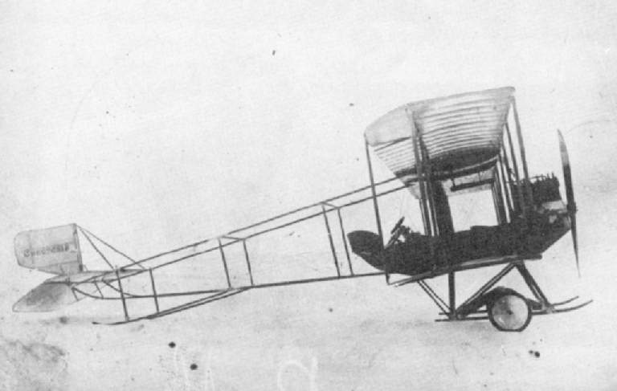
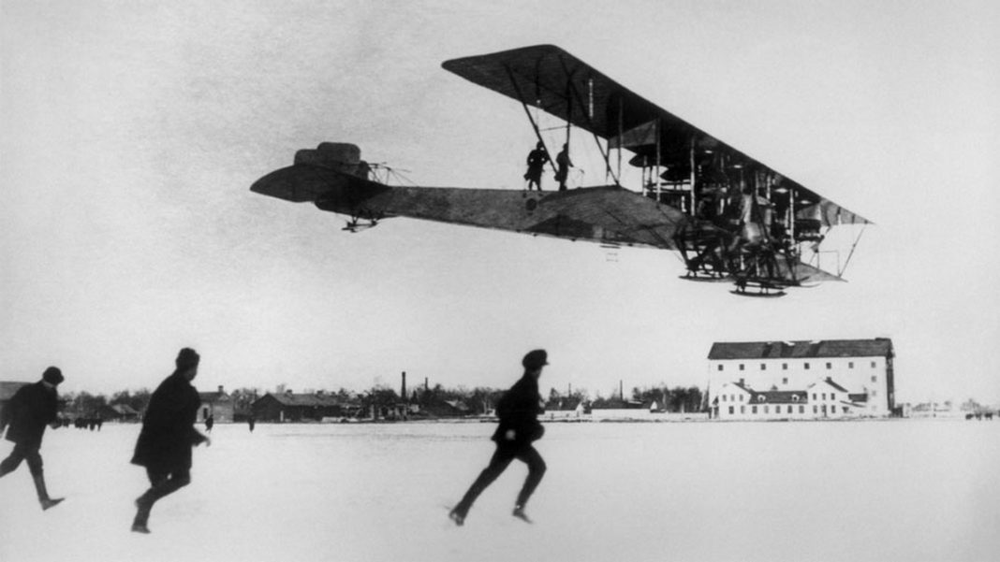
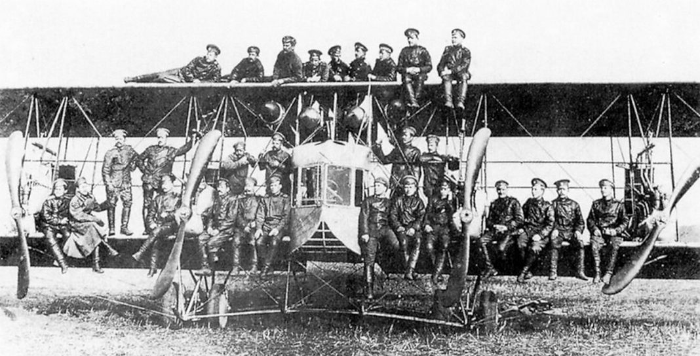
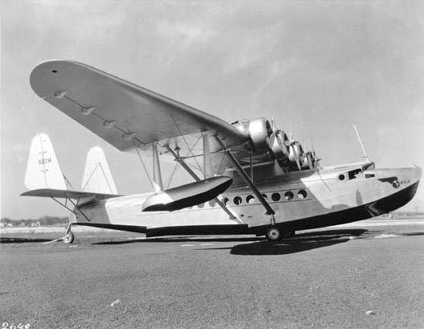
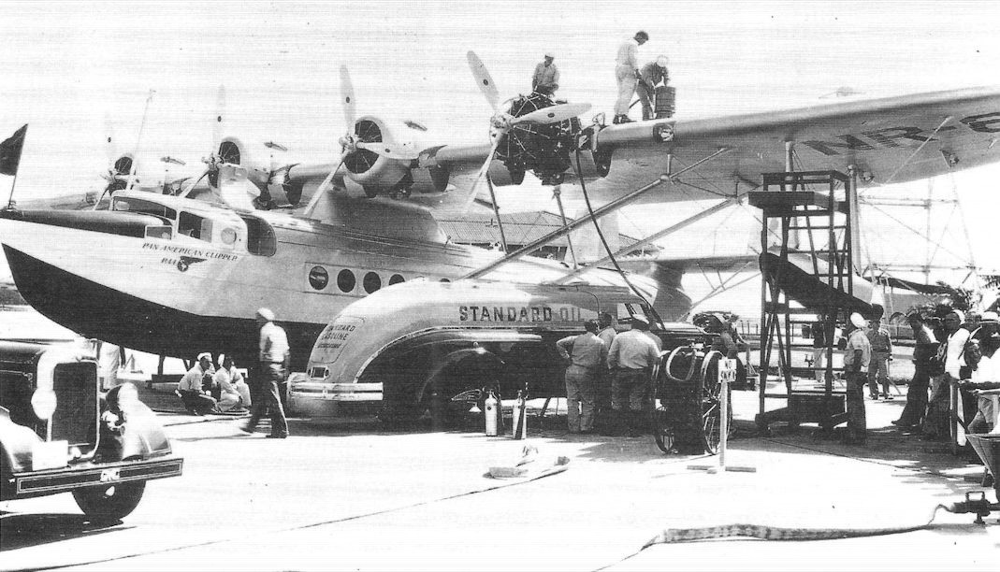
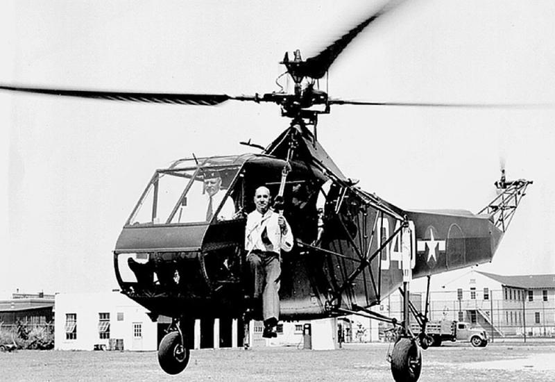

Літак С-6
С-6 – перший умовно «важкий» літак, створений українцем Сікорським. Новий біплан мав подвоєну потужність двигуна, збільшені розмахи верхнього та нижнього крил, а найголовніше — кабіну на три людини. І саме на С-6 Ігор Сікорський 29 грудня 1911 р. встановив світовий рекорд швидкості.
Бомбардувальник С-22
23 грудня 1913 року чотирьохмоторний "Ілля Муромець" вперше піднявся в повітря. Після його успішних випробувань рада Київського товариства повітроплавання звернулася до ради Петербурзького політехнічного інституту з проханням присвоїти Сікорському звання інженера-механіка без захисту ним дипломного проекту. Це прохання задовольнили. "Ілля Муромець" пішов у серію, протягом кількох років було побудовано близько 85 літаків цього типу. В грудні 1914 року з них сформували перший у світі бойовий підрозділ важких багатомоторних літаків – Ескадру повітряних кораблів під командуванням генерал-майора Михайла Шидловського (під час революції був розстріляний більшовиками). Різні модифікації "Іллі Муромця" успішно застосовувалися на фронтах Першої світової війни: як бомбардувальників вони брали на борт до 900 кілограмів бомб, а в ролі дальніх розвідників могли перебувати в повітрі до 10 годин. За роки війни "Муромці" виконали від 300 до 400 бойових вильотів, скинувши на противника 48 тонн бомб

гідроплан Sikorsky S-42
Sikorsky S-42 Clipper — комерційний летючий човен (гідроплан), розроблений і побудований компанією Sikorsky Aircraft на замовлення Pan American World Airways (Pan Am), отримане 15 серпня в 1931 році. S-42 мав традиційний корпус летючого човна і був оснащений чотирма двигунами Pratt & Whitney Hornet S5D1G потужністю 700 к.с., встановленими на передній крайці крила. Прототип летючого човна здійснив перший політ 29 березня 1934, в період розробки і тестування було встановлено десять світових рекордів для корисного навантаження і висоти. Перший літак був поставлений Pan American в серпні 1934 році, перший рейсовий політ відбувся 16 серпня того ж року. У 1935 році S-42 першими проклали маршрут через Тихий океан за маршрутом Західне узбережжя США — Філіппіни, в 1937 був відкритий маршрут до Нової Зеландії.

Гелікоптер VS-300
Vought-Sikorsky VS-300 (S-46) — перший дослідний вертоліт фірми конструктора Ігоря Сікорського. Номер 300 зафіксував третій побудований Сікорським вертоліт, з урахуванням двох, побудованих у Києві. 14 вересня 1939 року Ігор Сікорський нарешті відірвав VS-300 від землі. Політ здійснювався на прив'язі за декілька метрів від землі. Після переробки і ремонту після аварії (вертоліт перекинувся), 13 травня 1940 року Сікорський вперше піднявся в повітря без прив'язі. На початку 1941 року діяльність компанії Сікорського оцінило керівництво ВПС США, і високі армійські чини підтримали розробку вертольота і виділили кошти на розробку проєкту VS-316 (S-47), який отримав армійське позначення XR-4, і будівництво одного зразка.До осені 1943 року VS-300 повністю вичерпав себе як експериментальний апарат. Всього за час випробувань VS-300 проведено 18 значних переробок машини, кілька сотень дрібних змін, низку серйозних ремонтів після аварій. У жовтні 1943 року VS-300 передали в музей Генрі Форда в Дірборні, штат Мічиган. Він міститься там донині, за винятком подорожі назад на завод Sikorsky Aircraft для відновлення 1985 року.

Sikorsky S-61
Sikorsky S-61L вперше піднявся у повітря 2 листопада 1961 і був на 1,30 м довший ніж HSS-2 щоб нести значне навантаження ваги або пасажирів. Початкова машина S-61L мала два турбовальних двигуна потужністю 1350 к.с. (1005 кВт) GE CT58-140, цивільна версія T58. S-61L має модифіковане шасі без плавучих стабілізаторів. Першим цивільним оператором, який почав використовувати S-61, стали Los Angeles Airways, представивши його 11 березня 1962, за ціною $650,000 за машину. 7 серпня 1962 року, вперше піднявся у повітря S-61N. Машина загалом схожа на S-61L, але ця версія була оптимізована для роботи над водою, загалом у нафтовидобувній промисловості, отримавши поплавці від SH-3. Обидва S-61L та S-61N були оновлені до стандарту Mk II зі встановленням більш потужніших двигунів CT58-110, що дало покращення для роботи на великій висоті, зменшення вібрації і інші покращення деталей. Carson Helicopters стала першою компанією, яка скоротила комерційну версію S-61. Фюзеляж було скорочено на 1,30 м для збільшення продуктивності одного двигуна і зовнішнього навантаження. Унікальні версія S-61 Shortsky переробка S-61L і S-61N компанією Helipro International, VIH Logging став першим замовником переробки HeliPro Shortsky, яка вперше піднялася в повітря у лютому 1996. Одна з модифікацій S-61 має композитні лопаті несного гвинта Carson. Ці лопаті замінили оригінальні металеві лопаті Сікорського, які були схильні до втоми. Композитні лопаті несного гвинта Carson допомогли модифікувати вертоліт для перевезення додаткових 907 кг навантаження, збільшення швидкості на 28 км/год і збільшення дальності до 113 км
